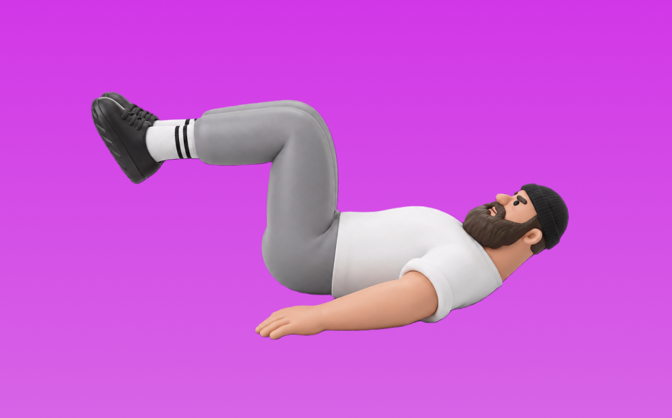

リバースクランチ

リバースクランチとは、自重を使って「体幹を丸める」動作で腹筋群（腹直筋、腹横筋）を鍛える種目です。器具なしで手軽にでき、フォーム次第で負荷調整しやすいのが特徴で、上体を丸めて起こし、ゆっくり戻す動作を繰り返します。お腹の引き締めと体幹固定力の向上が期待できます。
- 対象部位
- 体幹
- 器具
- 自重
- 記録形式
- 回数
- 別名
- 下腹クランチ
YouTube動画
-
美しいシックスパック（腹筋）を手に入れる！「リバースクランチ」の正しいやり方【15回×3セット】
-
【１分で解る筋トレ解説】リバースクランチ※初心者向け【筋トレライブラリー】
-
【実演あり】プロも１０回で悶絶！腹直筋下部に究極に効く最強の自重トレーニングのポイントを徹底解説！【リバースクランチ】
-
【基礎トレ】ゼロからわかるリバースクランチ〜腹筋を割りません？〜
-
【自宅筋トレ】なかやまきんに君の正しい腹筋３種目を学ぼう。
-
骨盤を丸めて持ち上げて下っ腹を鍛える！リバースクランチ
-
正しいクランチ（腹筋）のやり方｜注意したい4つのポイント
-
仰向けで、膝をゆっくり胸に引きつける！お腹のぜい肉を落とす「スローリバースクランチ」のやり方
-
リバースクランチ｜反り腰の原因とは！？おすすめのエクササイズ【お腹が気になる方必見】
-
1日5分 自宅筋トレプログラム「リバースクランチ」下っ腹を凹ます！｜1日1トレーニングで4週間で確実に1kg痩せよう｜みんなでフィットネス
-
お腹痩せ筋トレの定番「クランチ」の正しいやり方。初心者におすすめの腹筋強化メニュー【15回×3セット】
-
お腹をペタンコにするエクセサイズ・シリーズ 【リバースクランチ】
-
【目指せ！シックスパック】No.30 お腹～リバースクランチ～
-
下っ腹の引き締めに効果的！リバースクランチ
-
リバースクランチ
-
【第6回目】自宅お腹痩せ筋トレ方法！サイドリバースクランチ（女性・初心者向け）
-
腰椎を丸める 腰痛予防に効果的なリバースクランチ
-
腹筋の定番筋トレ「クランチ」。お腹を割るならこのメニュー（腹直筋）
-
女性でも簡単！ランニングに必要な筋トレ リバースクランチ
-
【シックスパック】腹筋するならリバースクランチ！【ゆっくりおろせ】
-
自宅トレ下腹凹8 リバース・クランチ
-
体幹トレーニング～リバースクランチ～
YouTubeショート
-
リバースクランチ｜毎日腹筋チャレンジ【お正月編】
-
腹筋はシンプルですが#shorts
-
【よくある間違いクランチ】 #ダイエット #筋トレ #新座市 #志木市 #腹筋
-
リバースクランチ
-
リバースクランチ 金
-
反り腰さんはプランクよりこれやって✨ #産後ダイエット#ママダイエット#ボディメイク#反り腰改善#インナーマッスル #下腹部痩せ #お腹痩せ
-
腹筋の正しいやり方と効果です🔥#shorts #トレーニング #自宅トレーニング #自宅トレ #筋トレ #training #自重トレーニング #腹筋
-
リバースクランチ
-
【海外で6,700万回再生 バキバキに割れる腹筋トレーニング】腹筋割れた人や縦線入った人が続出!! ABS WORKOUT abs exercise #腹筋トレーニング #腹筋チャレンジ #腹筋トレ
-
【THAT'Sトレーニング】リバースクランチ
-
ボディビルダーが教える腹筋の厚みを作る方法
-
リバースクランチ 下腹部引き締めのエクササイズ 【GronG30秒TV】
-
【筋トレ解説】脚とお尻を追い込む！バックランジ解説
-
【リバースクランチ】運動不足解消！お腹引き締めエクササイズ
-
下腹部が気になる人はコレ！#下腹部 #筋トレ #workout #フィットネス #格闘技 #mma #体幹 #fitness #ダイエット #トレーニング #bodybuilding #abs
-
あなたは大丈夫？？プランクの危険な落とし穴#shorts
-
【腹筋トレ解説】ケーブルクランチ #筋トレ解説 #腹筋トレ #腹筋トレーニング
-
リバースクランチ（Reverse Crunch）のやり方とフォーム
-
正しいラットプルダウン4つのポイント【筋トレ】
-
【上級】ディクラインリバースクランチ！上級者向け腹筋エクササイズ！
動作方法
- 体幹を固定して姿勢を整える
- 反動を使わず、腹部の収縮を感じる
- 呼吸を止めずに動作する
動作ポイント
- 腰を反らしすぎない
- 首に力を入れすぎない
ワンポイントアドバイス
- 回数よりも体幹の安定を優先する
- 腰に違和感がある場合は可動域を調整する
目的別回数設定
目的や体力に応じた一般的な目安です。無理のない範囲で調整してください。
- 筋力アップ
- 1〜5回
- 筋肥大
- 6〜12回
- 持久力アップ
- 13〜20回
YouTube動画について
動画はYouTubeの公開情報をもとに表示しています。内容は投稿者によるもので、Biggrによる監修ではありません。
アプリを入手
筋トレやトレーニングの記録はBiggrにお任せください。今すぐ無料で使い始められます。